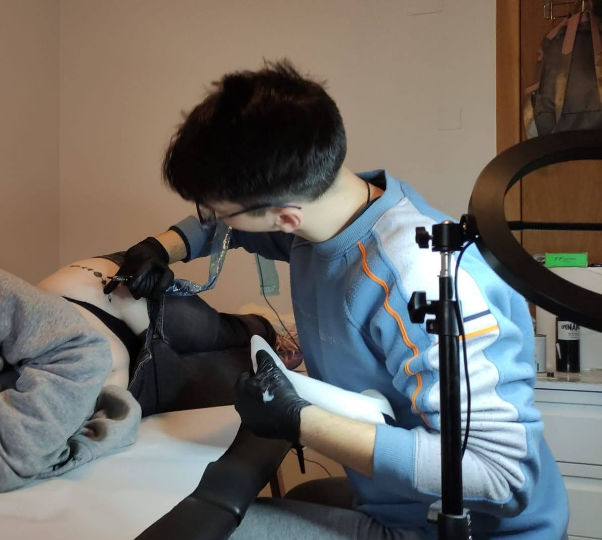

After posting some of my digital and traditional art on my personal instagram, a friend of mine at the time got in touch with me. He was telling me
how he started this course for Beginner tattoo artists, and he begged me to come have a look and tell him what I think. So I did, I went to
one of their courses with his teacher's agreement and showed me what they were learning there. At first sight, this looked nothing close to a beginner's
course, they were tattooing Salvador Dali's portrait on fake skin. I told my friend all amazed "There is no way I could do that!". The next second I have
his professor right behind me, I've been dared to try. Without much fate I still tried, I had nothing to lose, but something happened that moment, it clicked
instantly. To be honest, I did not have the greatest portrait of Dali in the classroom, but it felt like I've unlocked a new passion that was already fueled
by my love for art. After that day, I took the course myself and started doing progressively harder tattoos as time passed on. A very big help to starting this journey
were my friends that had faith in me to do my first ever tattoos on their skin.